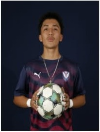

PRIMARY POSITION
Right Back
COLLEGE SOCCER RECRUITING PROFILE
CLASS OF 2027 · ROYAL LIVE OAKS ACADEMY
Recruiting film and season statistics will be added when available.

A versatile, right-footed defender from Royal Live Oaks Academy.
Carlos Alberto Gomez-Basilio’s primary position is Right Back, with Center Back as his secondary position. His experience includes MLS NEXT and USLA competition with Tormenta FC, along with additional training and exposure opportunities.
COLLEGE RECRUITING CONTACTPRIMARY POSITION
Right Back
SECONDARY POSITION
Center Back
HEIGHT
5’10”
WEIGHT
150 lbs
DOMINANT FOOT
Right
GRADUATION YEAR
2027
HIGH SCHOOL
Royal Live Oaks Academy
CURRENT / PAST CLUBS
Tormenta FC · Lowcountry Rush
ACADEMIC GPA
3.4

STUDENT-ATHLETE
GPA: 3.4 · Member of BETA Club · Honors classes since 8th grade.
VIEW ACHIEVEMENTSCOLLEGE SOCCER RECRUITING